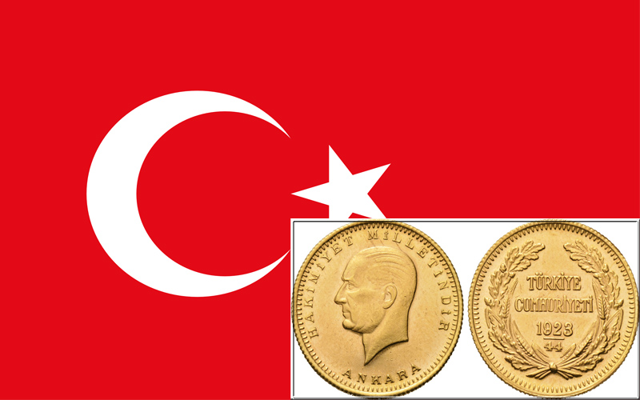
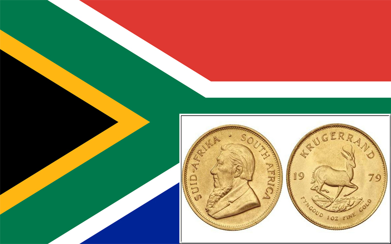
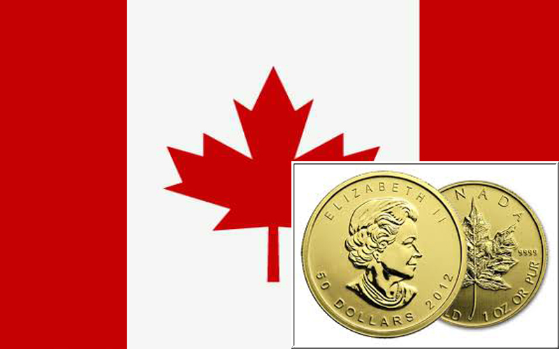
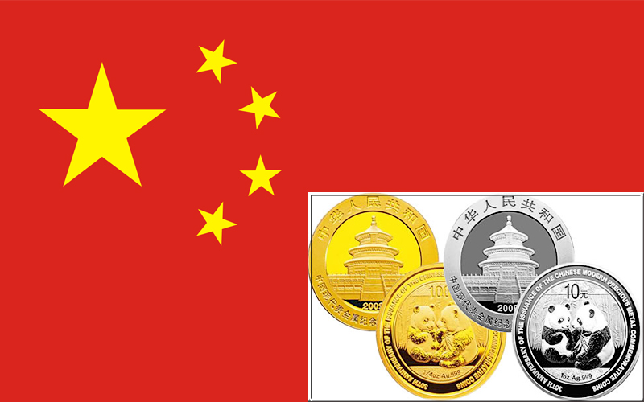
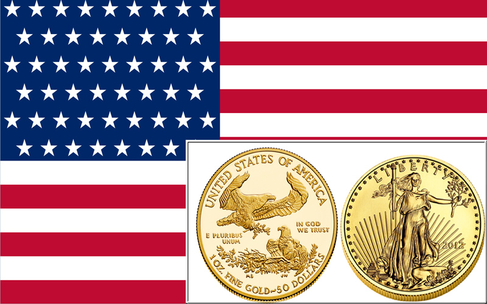
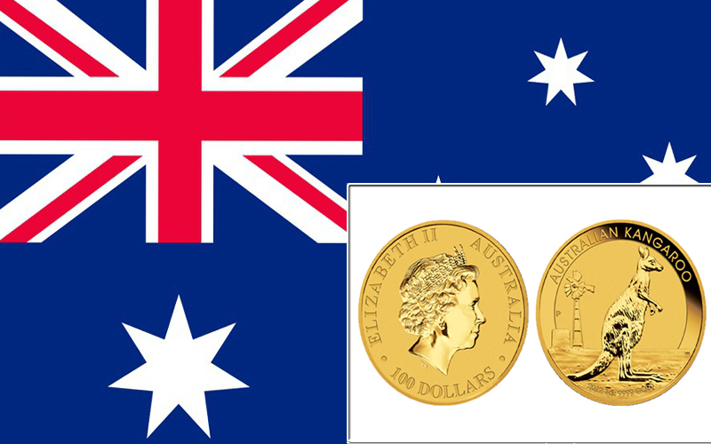
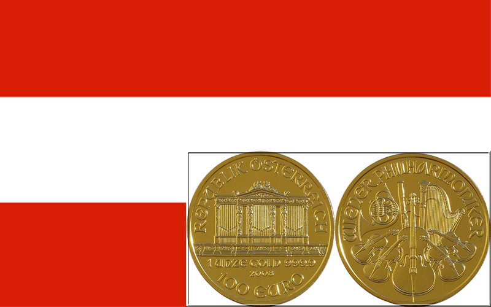

Монета из драгоценного металла, эмитируемая центральными банками и предназначенная в основном для инвестирования и создания личного фонда сбережений населением.
На современных инвестиционных монетах, как правило, указывается их масса или масса содержащегося в них химически чистого драгоценного металла (обычно в унциях). Как правило (но не всегда) на весовой монете указана номинальная стоимость, но реально монета стоит дороже.
Выпускаются серебряные, золотые, платиновые и палладиевые инвестиционные монеты. Первой инвестиционной монетой обычно считается южноафриканский крюгерранд, выпущенный в 1967 году.
Золотые инвестиционные монеты должны иметь определенные характеристики, чтобы вложение в них оправдало себя.
- Проба золотой монеты должна быть не меньше 22 карат. Чем выше проба данной золотой монеты, тем меньше сплавов в виде меди или даже серебра она содержит. Монеты высокого класса в конечном итоге стоят дешевле в пересчете на содержание чистого золота из-за связанных с ними премий. Некоторые инвесторы предпочитают 24-каратные золотые монеты, поскольку присутствие меди в монете придает ей большую прочность и уменьшает вероятность повреждения, если монеты постоянно меняют владельцев, как было когда-то. Конечно в прошлом монеты лежали в сейфах, но в будущем может все измениться.
- Монета должна быть широко распространенной (высокий уровень предложения). Редкие золотые монеты, которые нельзя негде достать превращаются в нумизматические монеты, у которых нет специфического рынка. Если мы рассматриваем золотые монеты как форму денег, тогда их должно быть много и они должны быть повсюду, поскольку дефицит приводит к тому, что они теряют свою свойство быть деньгами.
- Золотая монета должна обладать общепризнанным брендом. Одним из первоначальных стремлений и оснований чеканить золотые инвестиционные монеты было учреждение доверия и стабильности по отношению к золоту. Золотые монеты превращают гомогенный товар в вещь, имеющую репутацию, признание и определенный уровень ожиданий. Как и большинство брендов в мире, самые лучшие бренды золотых монет удостоверяют покупателя в пробе, весе и качестве монеты, то есть, держат свои обещания.
- Спрос на золотую монету должен быть высоким. Если данная конкретная монета имеет относительно низкий спрос, то в таком случае будет трудно найти продавца, если вдруг вам понадобится продать ее. Возможность купли и продажи товаров на вторичных рынках за достойную цену является признаком не только хорошего автомобиля, но и хорошей золотой инвестиционной монеты.
- Золотая монета должна обладать эстетической привлекательностью. Несмотря на то, что стоимость золотой монеты измеряется посредством содержащегося в ней золота, мы живем в мире, где эстетика всегда является фактором, влияющим на выбор товара. Например, с одной стороны, золотые монеты, на которых изображены арабские слова, не привлекут внимания западных инвесторов в золотые монеты, а китайские золотые монеты с изображением панды, с другой стороны, предлагают такую эстетику, которая преодолевают государственные, национальные, культурные границы, создавая невиданный спрос.
Каждая из перечисленных монет удовлетворяет всем требованиям к золотым монетах, о которых было сказано выше. Конечно, личный вкус и географическое расположение будут главными определяющими факторами для формирования этого списка. Существенные отличия, история и преимущества каждой монеты будут указаны в интересах ознакомления.
1) Золотая монета «Турецкая республика»
Это обстоятельство может кого-то удивить, но Турция произвела больше золотых инвестиционных монет, чем любая другая нация за прошедшие десять лет. Турецкие монеты называются «республиканскими» из-за слова «Cumhuriyet», которое означает «республику» на турецком языке. Существуют два типа этих монет: «Meskuk» (стандартная) и «Ziynet» (декоративная). Особенно популярны среди турецких граждан монеты «Ziynet», поскольку они приобретаются в качестве подарков для практически любого праздничного мероприятия – к рождению ребенка, обрезанию, выпуску из учебного заведения, военной службе, обручению и свадебным церемониям. Турция также использует золото и как средство сбережения в атмосфере инфляции как следствие серьезного финансового кризиса, произошедшего в конце ХХ – начала XXI вв.
В Турции существует один из самых больших крытых рынков в мире, который знают в мире под названием «Гранд-Базар». В нем работают 3 тыс. магазинов, многие из которых продают, покупают золото и драгоценности. Спрос на турецкие золотые монеты в основном приходится на Средний Восток, так что можно не переживать, поскольку в этом регионе найдется покупатель или продавец этих монет. Более того, Турция открыта для использования золота в качестве формы денег, поэтому там нет налогов или ограничений. Банковский сектор открыто признает золото и рассматривает его в качестве денег, что позволяет ему осуществлять широкий спектр услуг, таких как золотые счета, золотые драгоценности, которые можно превратить в денежные эквиваленты в банковском счете, золотые банкоматы и другие инновационные услуги. Первая в мире золотая монета была фактически отчеканена в Турции в 550-х гг. до нашей эры, так что исторически Турция является одной из золотых столиц мира.

2) Золотая монета ЮАР «Крюгерранд»
В 1970 году Южная Африка контролировала 62% мирового производства золота или около 80%, если вычесть Коммунистический блок, который копил свое золото в то время. Такая выдающаяся позиция позволяла ЮАР диктовать, каким будет будущее рынка золота. Предвидя конец золотого стандарта, представители золотоочистительного завода «Rand» (крупнейшего завода в мире) решили, что будет хорошей идеей создать современные инвестиционные монеты для широкой публики. Мысль была такая: поскольку частное владение золотом было запрещено во многих странах и континентах, а в случае уничтожения золотого стандарта (что и случилось в 1971 году), нарастающий спрос можно будет удовлетворить в форме монет. Так, в 1968 году была создана первая современная золотая инвестиционная монета с весом в 1 тройскую унцию, а в 1970 году она вошла в публичный оборот. На протяжении 1970-х гг., Южная Африка пользовалась практически монопольным положением на рынке золотых монет и является чуть ли не единственной страной, выпускающей стандартную монету в 1 унцию до сих пор. Однако настало время, когда другие страны заметили успех южноафриканской монеты и стали чеканить свои собственные.
На сегодняшний день роль Южной Африки в производстве монет является менее выдающейся, ведь только 8% годового производства золота принадлежит ей. Впрочем, «Крюгерранд»* и сегодня занимает особенное место в сердцах золотых инвесторов из-за ее истории и новаторства. Это самая общеизвестная современная монета, находящаяся в обращении, составляющая 1/5 монет, произведенных с 1970-х гг.
Название «Крюгерранд» произошло от имени Пауля Крюгера, президента Южноафриканской Республики с 1883 по 1902 гг. С 1970 по 1979 гг. чеканились монеты только в весе 1 унция, но с 1980 года чеканятся три других веса (1/2, 1/4 и 1/10 унции), которые представляют собой 20% из 60 млн. «Крюгеррандов» существующих сегодня. «Крюгерранд» это золотая инвестиционная монета с пробой в 22 карата и очень узнаваемым брендом отчасти благодаря антилопе-прыгуну, изображение которой находится на реверсе каждой монеты.

3) Канадская золотая монета «Кленовый Лист»
Канадцы были первыми, кто осознал большую популярность «Крюгеррандов» в 1970-х гг. и начали делать свои монеты уже в 1979 году. Они не хотели просто копировать работу южноафриканцев, поэтому Королевский канадский монетный двор создал золотую инвестиционную монету – «Кленовый Лист». Эта монета стала первой современной инвестиционной монетой с пробой в 24 карата (99,9% содержания чистого металла), затем содержание золота увеличилось в 1982 году до 99,99%, а затем и до 99,999% в 1998 году. «Кленовый Лист» является самой популярной 24-каратной золотой монетой в мире, ведь около 40 млн. этих монет находится в обращении.

4) Китайская золотая монета «Панда»
Китай имеет богатейшую историю, первые формы денег возникли на его территории еще три тысячи лет назад. В Китае начала производить золотые инвестиционные монеты в 1982 году, когда Инкорпорация китайских золотых монет представила 24-каратную (99,9% содержания чистого металла) золотую инвестиционную монету «Панда» в четырех весовых категориях: 1 унция, 1/2, 1/4 1/10 унции. Они расширили затем предложение до 1/20 унции и 1 грамма в 1983 году. Эти весовые категории были впервые введены именно китайцами.
Вероятно, наиболее серьезным новаторством стало решение менять изображение реверса каждый год. Это решение превратило в один и тот же момент монету «Панда» в коллекционную и инвестиционную монету, тем самым, она стала первой в своем роде. Сегодня Китай является крупнейшим производителем золота с амбициозными планами роста и внутри страны и на международной арене. Китай накопляет все больше золота. На сегодняшний день золотые резервы Китая составляют более 1,7 тысячи тонн. Кроме того, юань недавно приобрел статус резервной валюты в МВФ, что также указывает на то, что эта валюта, так или иначе, подкрепляется золотом. Если это так, то позиции и авторитет золотых «Панд» будет расти.

5) Золотая монета «Американский Орел»
Золотая монета «Американский Орел» была создана в 1986 году в четырех весовых категориях (1 унция, 1/2, 1/4, и 1/10 унции) и 22-каратным золотом. Как и в случае с монетой «Турецкая республика», чистота золота в 22 карата (в сочетании с тяжелыми сплавами) дает монете твердость и выносливость, оберегая от быстрого изнашивания, особенно тогда, когда она была в широком обращении как валюта. 24-каратный «Американский Буффало (бизон)»*** был создан в 2006 году как альтернатива для тех, кто покупает золотые монеты в США.
Монетный двор США является одним из самых легендарных производителей монет в истории. Американский рынок золотых монет – один из крупнейших в мире, а США имеет официально самый большой золотой резерв в мире, что делает «Американский Орел» популярным выбором даже за пределами географических пределов Америки.

6) Золотая монета «Австралийский Кенгуру»
Австралия начала производить современные золотые инвестиционные монеты в 1987 году посредством Пертского монетного двора. 24-каратные монеты имели пробу 0,9999 и изначально назывались «Австралийский Наггет» (наггет – англ., самородок) и до 1990 году чеканились разные изображения наггетов в следующих весовых категориях (1 унция, 1/2, 1/4, и 1/10 унции). С 1990 году на австралийских золотых монетах на реверсах появляются кенгуру, и соответственно изменяется название монеты (но только с 2008 года)****. Подобно китайским «Пандам», с 1990 года на австралийских монетах каждый год меняется изображение кенгуру на реверсе, что делает эти монеты привлекательными для коллекционеров и инвесторов. Пертский монетный двор поиграл в недавнем прошлом своими мускулами, создав самую большую золотую монету в мире – 24-каратную монету, весом в 1 тонну.

7) Золотая монета «Австрийская Филармония»
Впервые золотая монета Австрии «Венская Филармония» была выпущена в 1989 году. Наверное, эта монета появилась позднее всех других инвестиционных монет, но свое опоздание Австрийский монетный двор отплатил сполна посредством создания нового монетного бренда, совмещающего в себе творчество и дизайнерское новаторство. Эта монета посвящена культурному наследию Вены как музыкального города, а также является одой по отношению к Венскому Филармоническому Оркестру. На монете изображены разнообразные инструменты. «Венская Филармония» считается одной из самых красивых монет в мире. 24-каратные (0,9999 пробы) монеты доступны в 4 весовых категориях: 1 унция является самой популярной, а затем идут 1/10, 1/4, и 1/2 унции. Кроме того, золотая «Филармония» считается самой известной золотой монетой в Европе.
